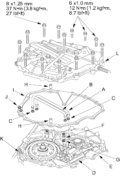

- Install the manual valve body lines A and B with the new O-rings (C) on the manual valve body (D) and the intermediate housing (E).

- Install the ATF feed pipe (F) with the new O-rings (G).
- Install the two dowel pins (H) and the new end cover gasket (I) on the intermediate housing, then install the new O-rings (J) over the ATF feed pipes (K).
- Install the end cover (L) (three; 6 mm bolts and 11; 8 mm bolts).